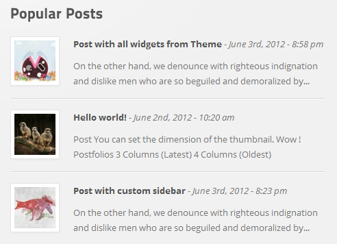

1. Installing the Theme
There are 2 ways to install wordpress theme :upload un-zipped theme via FTP and zipped file directly by using wordpress theme installer .
You have to setup Wordpress first. (download it at : link)
1. Upload via FTP
- Log into your site via FTP . (if you don't have any FTP program you can use FileZilla )
- Browse to your folder located at yoursite.com/wp-content/themes
- Upload the un-zipped theme folder
- Login to Wordpress , in Left Menu go to Apperance -> Themes
- Find & Active the theme
2. Upload via Wordpress
- Login to Wordpress
- go to Apperance -> Themes
- you will see Install Theme tabs. click Upload right below the tab
- CLick choose file, browse to theme zipped theme file , click Install and wait for a seccond.
- Active the theme
Important: Remember to hit Option Reset in Theme Options after activing the theme in first time.
2. Import and Setup Sample Data
The theme comes with Sample data (just like the theme preview) that allow you to create some dummy content to your site to help you get started with the theme .
2.1 How to Import the sample data ?
- You can find the sample-data.xml file in theme package.
- Login to Wordpress , in Left Menu go to Tools -> Import
- Choose Wordpress, if the plugin haven't not been installed , the popup window will show up and just click Install Now.
- click Activate Plugin & Run Importer
- CLick choose and browse to the sample-data.xml
- Click upload file and import,
- Wait a few seconds .
2.2 Restore Theme Option settings
Copying the content in option-settings.txt and paste it into Appearance -> Theme Options -> Backup Options tab -> Transfer Theme Options Data and don't forget to hit Import Option
2.3 Setting up the menu !
Now go to Apperance -> Menus , box Theme Locations select the menu as the follwing image
Remember to hit Save
2.4 Setting up the sidebars.
By defaulr ,Theme comes with 4 custom sidebars (Default sidebar (main), and 3 footer sidebars) but you can create unlimited sidebars for each page or post, this will be introduced in the next Steps. And now go to Apperance -> Widgets . you can drag widgets to the sidebars you want to display on.
with the Twitter feed, you have to Create your application at Twitter API and copy the Consumer key & Access token to Theme Options -> . Social Network -> Twitter API
2.5 Setting up the Homepage & Blog page (post page).
You can easily use a static page as a homepage . go to Settings -> Reading . in this case, i choose Home (static page) for my home page, and Blog for posts page.
3. Using Theme Options
This theme comes with a Powerful Theme option Panel that will allow you to customize your site to the way you love, like change Color Style, Porfolio options or Slider...etc
Now go to menu Apperance -> Theme Options and discover it
3.1 General Settings:
Allow you to change something like:
- Site logo (plain text or Image logo ),
- Admin login logo,
- Custom Favorite icon (Favicon),
- Rss Feed
- Contact form Email (for contact page)
- Header Caption (located in Top bar menu)
- Tracking Code (Snippets of code to tracking your site e.g Google Analytics)
3.2 Home Settings
Home settings allow you to add image to sliders in Homepage (Homepage template). Slider limited to 5 images, because if you add over 5 images, it will break the nicely layout i have built, so 5 is my choices. :)
3.2.1 Skitter Slider:
You can change the slide speed, autoplay, show preview slide when hovering slide bullets navigation ,set the effect in each slide.
3.2.2 FlexSlider:
This slider allowed you to add video to slide, support Video from Youtube and Vimeo only
when you use video slide , You have to add the image to slide too, because the it will be used for thumbnail slider navigation.
if the Video slide only appear when you added image, active video slide mode and enter video id.
3.3 Interface Settings
Interface setting options allow you to setting the main layout like sidebar on the left or right, enable/disable Resonsive layout for smart Mobile device such as iPhone, iPad ...ect.
there are some other option like:
- Turn on/off responsiveness
- enable boxed-layout mode
- Turn on/off the search box in primary menu navigation
- Turn on/off Top bar (including top bar menu navigation & header caption)
- Turn on/off breadcrums
- Get in touch form (before the footer widgets)
- 3 footer layouts for your choice (Full - widgets & copyright info, Half widgets sidebar only and Small for copyright info)
- Also you can setting the number of columns in footer widget area. max is 6 and min is 2
3.4 Blog Settings
- Default banner text (this will display as a heading of Posts page default is "blog")
- Enable post excerpt (Posts page)
- Select the featured image (post thumbnail) link type.
- Custom post thumbnail size (height of featured thubmnail of post)
- Enable read more button( Posts page)
- and hide/show Post meta info
3.5Portfolio Settings
- Portfolio Layout ( Fit rows or masonry )
- Portfolio Columns (max:4, min 3)
- Thumbnail size (height) (this affect to the thumbnail display in the portfolio page)
- Select the featured image (portfolio thumbnail) link type.
- Portfolio Page Title
- Portfolio Page URL (use for breadcrums navigator)
- Rewrite Portfolio Items URL Base ( good for SEO)
- Height of image slider (for Single Portfolio page)
- Portfolio slider effect
- Enable and disable portfolio excerpt, title & read more button(display the exerpt in portfolio page)
3.6 Typography
Typography options allow you to change the font style of Headings H1,H2,H3,H4,H5,H6 and body font style too.
Built-in with 21 fonts (default is cufon & most 20 most popular font from Google webfont library)
and the most important thing is if you dont like the fonts i have includes, you can choose your own by visiting Google webfont and pickup any font you'd love to use in your website. That's Cool :)
- Style the Headings H1,H2,H3,H4,H5, H6 with some attributes like Font size, Font style, Line height, Letter Spacing, Margin Bottom.
- Pre-installed 20 Google Webfont. (default is none)
- Body Font style
- and custom Custom Google Font
If no font selected, the Headings with be replace by Titilium font by default.
and how to install other fonts from google that theme doesnt't have ?
Visit Google webfont.
Pick your font. click Quick use , Copy the Name of font (in this example i chose Loster)
paste into custom Custom Google Font field
copy embed code from standard tab to the field below the font name.
and hit Save All Changes. Done!
3.7 Styling Options
- 6 Built-in Skins
- Disable border radius (if you like square style).
- Select the overlay effect :Glass (default), Gradient and Solid (no effect)
- Primary color , secondary color and some option for link, link hover, slider background color, top bar, footer, background color or pattern
- also you can define some custom css rule.
Note: if you define your own color style, you have to disable the built-in skin option (default) so the new style will be affected.
3.8 Social Network
3.8.1 Twitter Api
Your Twitter authentication for twitter feed widget.
3.8.2
Enter your custom social networks link, this will display in the top right of banner.
3.9 Advanced Settings
This option allow you to create a quick under construction page if your site is not ready, No one can view it except you :). Enable by checking the checkbox and setup your message. don't forget to set the logo image in General Settings. that will be used for a logo on construction page :)
3.10 Backup Options
In this option you can backup the Theme Option settings, this is helpful if you moving your site to new server or something like that. just copy and paste the text in Transfer Theme Options Data field to new text file and save it. Restore by pasting it into that field and hit Import Options.
4. Setting portfolio page
4.1 Add a Porfolio
Add a new page and title it, in box Page attributes select Template -> Portfolio
Publish it, Now all the Project items will be shown here
You can add portfolio page to menu by setting in Menus.
4.2 Add a project
in the left sidebar of Wordpress. go to Portfolio -> Add New
The theme supported 2 types of portfolio : Video & Image . In the following image you can visualize how the data will be displayed on Single Portfolio page

4.3 Slideshow (image) portfolio:
with this type you are allowed to upload unlimited image that will be displayed on Single Portfolio slider.to upload image. click right above the editor ,drag your images to Upload box and wait a few seccond,
In this case i have uploaded 3 image , featured image that will be displayed in main portfolio page , all the images that uploaded via this post (we call it Gallery in wp 3.4) will be used for Single porfolio slider, you can upload image as many as you want :).
Note: you don't need to click insert image, just upload and click cross icon after get done. That's all.
4.4 Video portfolio:
in the Portfolio Detail Settings box click dropdow box Portfolio type and select Video and Video Settings box will appear. now choose type of video source Vimeo or Youtube.
5. Generating Sidebar
Now you can create as many sidebars as you need for any page you want. Thats right, page/post specific sidebars. You can easily seperate your site into sections, or make every single page have page specific sidebar content on it. Great for CMS sites. You can replace any sidebar with any other sidebar.
To create a new sidebar go to Apperance -> Sidebars
click Add Sidebar, enter sidebar's name and ok,
e.g: Sidebar For About page.
and go to Widgets and pick some widget for that sidebar. Now create a new post/page and select the sidebar that you have created before.
6. Create a Menu
Theme comes with 2 menu , Primary Menu Nav & Top bar Nav
to create new menu go to Apperance -> Menus.
Wordpress allowedyou to create unlimited menu in case you want to change the Menu Navigator on your site quickly.
Create your menu and add some posts/pages by selecting and adding to menu , save. and select menu to display on Theme Locations box
7. Using Page Template
Theme comes with 7 page templates
- Archives/sitemap
- Contact
- Fullwidth
- Home
- Portfolio
- SidebarRight
- Sidebar Left
To use page template, create new page got to Pages -> Add new and choose the template you want to use for that page in Page Attributes box
8. Setting Contact Form
Go to General settings -> Contact form Email.
IF you use contact form shortcode, you can add another email address (if no email added, the default one from theme options will be used for contact form)
Save it, Done
9. Setting Blog Page
Add a new page, set the title (The real title that display as a Heading of page for posts set in Theme option -> Blog Settings) and select a page template : Blog.
Now go to Settings -> Reading select the page you have just created before as a as Posts Page. In this case my Blog page is Blog.
Done, now go add some posts and they will be display in Blog
10. Using Shortcodes Generator
Wordpress shortcode allow users to include complex information into a post without coding knowledge, a great way of adding theme-specific styling through a simple-to-use tag in your post editor . it works as an effective method of saving time in your day-to-day blogging .
Let's get started :)
You can see the shortcode button when creating a new page/post/portfolio.
Theme comes with over 30 super useful shortcodes to saving your time.
in this section i will help you to add some advanced shortcodes like Table, Pricing table, Google Map
first just take a look at my example to visualize & understand the structure of shortcodes to see how it works, also you can use sample data from the package to modify :)
10.1 Buttons:
CLick shortcode button -> Buttons.
Choose type, style , size ... you'd like to.
The primary style is defined by theme color in theme option, eg: i choose green skin, my button is green too.
and theme button:
10.2 Border frame
Allow you to add a small frame outside of content like slideshow, image, map, ect.
10.3 Block quote
10.4 Columns:
Content can be split into multiple columns, Column shortcode allow you to create multiple layout like 1/2, 1/3, 1/4, 1/5, 1/6,
to add column click shortcode button-> Columns -> select Column type and add some content to the field that will be displayed inside the columns, you can add add more columns by clicking Add Column button and select column type. Click insert shortcode when you get done.
In this example image want to set three columns in my homepage so i add 1/3 first (one third)- 1/3 - 1/3. do the same to another types of layout you want to use.
10.5 Contact form
this shortcode allow you to add a quick contact form any where, in post, page, widget .
If the email is blank, the default email defined in theme option will be used.
Example of contact form shortcode in text widget
10.6 Dividers
Divider shortcodes let you to separate the content, there are 5 types of divider
- Default, default small margin, default large margin and no margin top
- Clear( no image)
- Shadow
- Quick back-to-top
- Heading
10.7 Dropcaps
5 style of dropcaps
- Default dropcap (rounded)
- Circle dropcap
- First letter
- Quote mark
10.8 Google map
Create a map from Google Map Api.
You can easily config a map from shortcode generator, add avatar of your location on map (PSD map point included), type of map ( HYBRID, TERRAIN, SATELLITE, ROADMAP ), size, Short description in the map popup...ect
10.9 Iconboxes
10.10 Image lightbox
is used to overlay images on top of the current page content
10.11 List
An unordered list typically is a bulleted list of items
10 style of bullets
No bullet, Dot, Tick, Star, Bubble, File, Info, Cross, Plus, Arrow
10.12 Notification
Use this shortcode to denote very information to your users. 5 style: Light, Blue, Yellow, Green, Red
10.13 Pricing table
To creat pricing table , you have to create Table container first and set the number of columns in side it.
step 1:
Pricing Table -> Add New Table.
Step 2:
add a column., there are two type of column Features and Plan . In Plan column you can set the featured columns..
after adding ther heading of column press Insert shortcode and go back to the editor.
Step 3:
add some features to the columns using unordered list
Just take alook
10.14 Recent/popular posts
Easy to display the posts from blog with this shortcode.

10.15 Recent Portfolio
Display the Newest/Oldest portfolio
10.16 Slider and testimonial
Creat a quick testimonials and image slider,allowed to add unlimit Text or images.
Slider come with 3 effects:
- Slide Vertical
- Slide Horizontal
- Fade
10.17 Normal Table
Look a that 2 images and you will visualize the table structure.
10.18 Tabs, toggle, accordion
10.19 Video from Youtube and Vimeo
add a video to your site by entering the video code id and video source!
And some other shortcodes
11. Resources & Credits
The following resources where used in the theme.
11.1 Javascript
- jQuery - http://jquery.com/
- FlexSlider - http://www.woothemes.com/flexslider/
- SkitterSlider - http://thiagosf.net/projects/jquery/skitter/
- Cufon Replacement - http://cufon.shoqolate.com/generate/
- Isotope (Commercial License) - http://isotope.metafizzy.co/
- jQuery Easing v1.3 - http://gsgd.co.uk/sandbox/jquery/easing/
- PrettyPhoto - http://www.no-margin-for-errors.com/
- hoverIntent r6 - http://cherne.net/brian/resources/jquery.hoverIntent.html
- jQuery Touchdown Plugin - https://github.com/samuelcotterall/Touchdown
- jquery.fitvid http://www.alistapart.com/articles/creating-intrinsic-ratios-for-video/
- froogaloop http://vimeo.com
- TitilliumText25
11.2 Wordpress plugin
- Timthumb - https://code.google.com/p/timthumb/
- Sidebar Generator - http://www.getson.info
- TGM-Plugin-Activation - https://github.com/thomasgriffin/TGM-Plugin-Activation
- Simple Breadcrumb Navigation - http://www.kriesi.at/
- Slightly Modded Options Framework SMOF - http://aquagraphite.com
- ZillaShortcodes - http://www.themezilla.com/plugins/zillashortcodes
11.3 Icons used
- Basic icon set by PixelMixer (48x48) - Link Download
- iconSweet Link